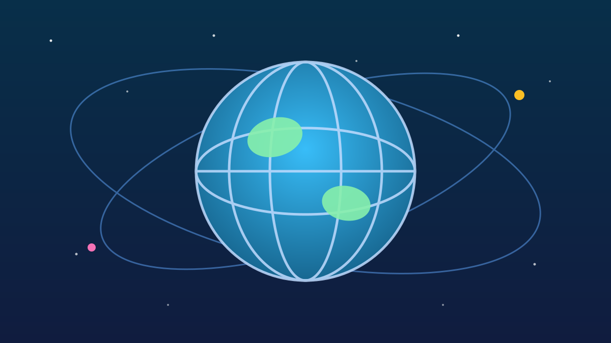

1 / 6

🌍 DUNIA
4 tahun misteri siapa yang meledakkan pipa gas Eropa — akhirnya disidangkan
Yang bikin awkward: yang disidang warga negara sekutunya Jerman sendiri. Geser →
2 / 6
⚖️
Sidangnya di mana, siapa yang disidang?
Sidang dimulai hari ini, Rabu 14 Oktober 2026, di Pengadilan Tinggi Regional Hanseatik, Hamburg, Jerman. Ini sidang pertama untuk kasus peledakan pipa Nord Stream.
Terdakwanya "Serhii K." (nama lengkap Serhii Kuznietsov terungkap saat ekstradisi), 50 tahun, mantan perwira pasukan khusus Ukraina yang dituduh sebagai salah satu perencana utama. Ia mengaku tidak bersalah.
3 / 6
💥
Flashback: ledakannya kayak gimana?
26 September 2022, ledakan menghancurkan pipa Nord Stream 1 & 2 di Laut Baltik — pipa 1.200 km pemasok gas Rusia ke Jerman. Kebocoran metananya masif (diperkirakan ±500.000 ton).
Modus yang dituduhkan: tim 7 orang menyewa yacht "Andromeda" dari Rostock, lalu menempelkan 4 bom militer berpengatur waktu di kedalaman ±80 m dekat pulau Bornholm, Denmark — masing-masing seberat hingga 27 kg.
4 / 6
🗂️
Apa dakwaannya?
Jaksa Jerman menuntut perbuatan yang setara kejahatan perang: menyerang sasaran sipil, meledakkan bahan peledak, menghancurkan infrastruktur, dan mengganggu layanan publik. Plus dakwaan peledakan, perusakan properti, dan gangguan layanan umum.
Jaksa menuduh aksi itu dilakukan "atas nama instansi negara Ukraina" dengan tujuan memutus pendapatan gas Rusia — tapi Kyiv berulang kali membantah terlibat.
5 / 6
😬
Kenapa ini bikin Jerman awkward?
Jerman adalah pemasok bantuan militer terbesar buat Ukraina di Eropa — jadi menyidang warga Ukraina itu canggung secara diplomatik. Serhii K. ditangkap di Italia pada Agustus 2025 saat liburan keluarga, lalu diekstradisi.
Sidang dijadwalkan 16 kali pertemuan hingga 17 Desember 2026, berlanjut ke Februari 2027. Dia satu-satunya yang disidangkan, meski jaksa mengidentifikasi tujuh tersangka — satu tersangka lain ("Vladimir Z.") ditangkap otoritas Kroasia.
6 / 6
🤔
Efeknya ke lo apa?
Ledakan ini dulu bikin krisis energi Eropa dan harga gas dunia bergejolak — ujung-ujungnya harga barang global ikut kena imbas. Sidang ini nunjukin betapa rumitnya geopolitik: sekutu bisa aja saling "menyakiti" di belakang layar. Buat lo yang suka drama internasional, kasus ini bakal jadi serial panjang sampai awal 2027.